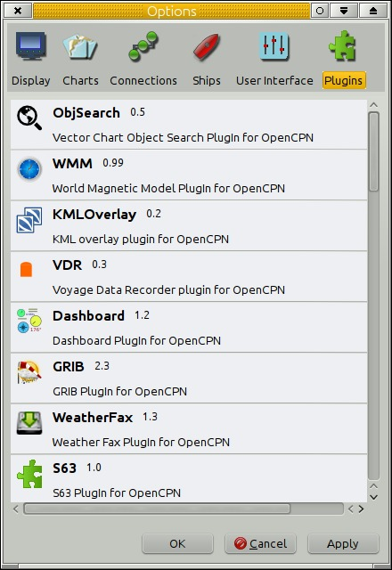
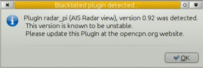
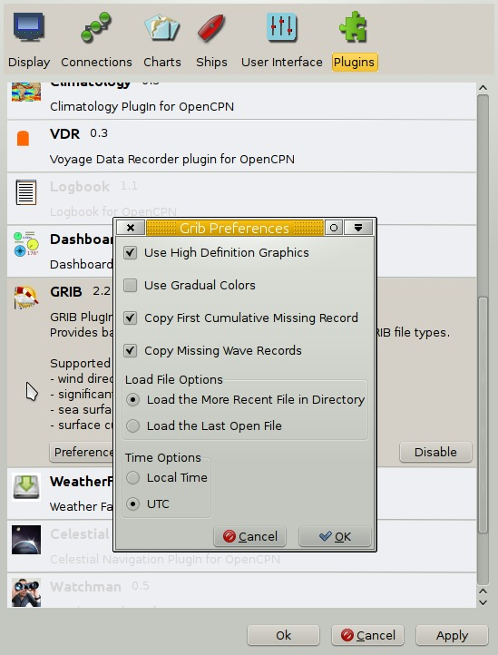

The core OpenCPN tries to keep features to a minimum so that it is lean, mean and easy to use. Features can still be added through the plugin infrastructure.
The release of OpenCPN 4.2 upgrades the user framework for Plugins to a newer version, which means it is not binary compatible with the previous releases and all Plugins for Windows and Linux must be rebuilt for compatibility.
These newly rebuilt plugins will not work with older versions of OpenCPN.

Many more plugins are available. See below.
Go to the dedicated page for downloading plugins: PlugIns
Currently there are about 20 different plugins available for download.
For a complete list of plugins read the recent posts in this forum thread.
The release of OpenCPN 4.2 upgrades the user frameworks for Plugins to a newer version, which means it is not binary compatible with the previous releases and all Plugins for Windows and Linux must be rebuilt for compatibility. It is expected that this Plugin interface will remain stable for some time so Plugins will work across different (future) versions of OpenCPN.
Plugins or versions of plugins known to be problematic can be Blacklisted.

A dialog pops up for 5 seconds when starting OpenCPN, if a blacklisted plugin is detected. This will happen even if the plugin is not enabled. A number of plugins are blacklisted. They are, mainly, old problematic versions of plugins. There is always a newer version of a blacklisted plugin, or, in worst case scenario, one will soon be released.
For Linux, place the downloaded “pluginxx.so” in {prefix}/lib/opencpn, which means /usr/lib/opencpn for a standard installation, using the provided packages. If you are compiling yourself {prefix} may be “/usr/local” instead of “/usr”. Check “opencpn.log” if necessary.
For Windows the downloaded file is usually an executable “.exe” installation file. Click on the file and follow the instructions. If the file is a “_.dll” place the downloaded “pluginxx.dll” in a “plugins” sub folder of your OpenCPN installation folder. A common location is C:\Program Files\OpenCPN\plugins.
Once the plugin is in the right directory, restart OpenCPN and proceed to enabling the plugin.
For Mac the plugin will come as a pkg file. Double-click the pkg file and follow the install instructions.
This will place the plugin files in the proper locations.
Plugins are made available by clicking on the plugin in the Options→Plugins Tab. Once this is done, an “Enable” button appears. Pressing this button activates the plugin icon in the ToolBar and changes the the default “grayed out” text to black in the list. Not all plugins have an icon when active. For most plugins there is a “Preferences” Button for configuration.
When a plugin is disabled in the Options→Plugin tab, the plugin Icon disappears from the ToolBar.
The Plugin Icon works as a toggle switch for the plugin. Pressing the Grib Icon, for example, activates the Grib plugin. Pressing one more time deactivates it.
The WMM Icon uses a new feature, by displaying the magnetic variation, at the position of OwnShip in the button itself.
Version 4.2 has implemented automatic reload of updated PlugIns by visiting the Options→Plugins screen.
Presumably the plugins are rescanned and loaded.
Previously, after a plugin was Disabled, the program had to be shut down and reopened for the full change of Opencpn status to occur. This is no longer necessary, simply go to the Option→Plugins screen and all plugins will be reloaded.

If you run into problems with plugins, first check what the opencpn.log file says.
For each plugin you will find lines similar to:
08:59:25 CEST: PlugInManager searching for PlugIns in location /usr/lib/opencpn\\ 08:59:25 CEST: PlugInManager: Loading PlugIn: /usr/lib/opencpn/libweather_routing_pi.so\\ 08:59:25 CEST: /usr/lib/opencpn/libweather_routing_pi.so\\ API Version detected: 110\\ PlugIn Version detected: 101
This example is from Linux.
On Windows systems the location of the log file will be displayed when you click “Help” (the ? mark icon) on the toolbar. Alternatively, to find the “opencpn.log” on your system read OpenCPN Installation.